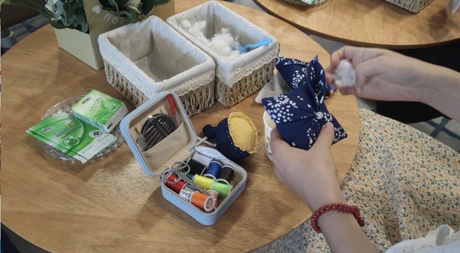

为大力弘扬中医药文化，按照国家中医药管理局相关要求，在省中医药局统一部署下，2023年“中医药文化服务月”活动正在持续火热进行中，全省各地通过中医义诊、展览展示、参观体验、科普讲座等形式，进一步促进中医药文化传承创新发展，增强中医药文化服务功能，更好满足广大群众的中医药文化需要，切实承担起新时代新的文化使命。
四川省第二中医医院
近日，四川省第二中医医院在西南石油大学外国语学院举办了“传播中医药文化，弘扬中医药国粹”活动，成都刻丽缇美企业管理有限公司执行董事、成都健康管理研究院客座教授、高级健康管理师 李炎与中外学生、教师代表共计100余人进行了一次深度交流。
五名医生在现场对师生们进行了义诊，让大家领略了望闻问切的奥妙。专业护理团队的现场演示，把中医诊疗“以外治内，痛舒合一”的独特魅力一一呈现在大家眼前，师生们大开眼界。中外学生带着深厚的兴趣体验了一把火龙罐、棍针、温通刮痧等特色中医疗法。活动现场摆放了许多藿香、艾叶、白芷、药酒，独特的香气萦绕四周。护理人员一边教中外学生制作香囊，一边介绍香囊的作用。“回国后我一定要向朋友们介绍中医药。”在西南石油大学就读的巴基斯坦籍学生汉南体验了中医师的推拿按摩后，兴奋地说。
这次中医药进校园活动，是弘扬传承中医药文化的具体实践，相信在院校双方的努力下，中医药传统文化会得到更好地传承和发展。
成都体育学院附属体育医院
2023年7月，成都体育学院附属体育医院组织专家团队到西藏林芝拉萨开展了为期一周的大型义诊活动。“赴藏义诊林芝拉萨行”大型义诊活动由西藏自治区驻成都办事处主办，从成都市内11家三甲医院抽调的19名知名专家组成第19团，先后来到鲁朗卫生院、巴河卫生院、林芝人民医院、林芝国家安全局、堆龙德庆区人民医院、当雄县人民医院、西藏自治区国家安全局等进行义诊咨询、医疗培训、爱心捐赠、干部保健等健康志愿者服务。
义诊中，专家发现来这里义诊的藏族同胞骨科患者较多，骨性关节炎尤为突出。专家们充分发挥中医药特色和郑氏伤科的特点，在开具中药处方的同时，还进行了生活习惯、情志调整、运动康复的健康宣教，获得了群众的一致好评。
成都市双流区中医医院
7月14日，在成都市双流区委人才工作领导小组办公室指导下，由成都市双流区妇女联合会、成都市双流区卫生健康局主办，成都市双流区中医医院（四川省中医药文化宣传教育基地）协办，双流区女企业家协会承办的“盛夏芳华 向阳而生”双流区女企业家协会夏日中医药文化主题交流活动在双流区成都芯谷发展服务局顺利举行。双流区区级各部门正局职领导干部、高层次女性人才、双流女企业家协会会员等63人参加活动。
活动现场，来自双流区中医医院的专家主任医师何秋通过健康科普讲座，为大家讲解更年期女性养生保健知识及三伏贴敷相关保健知识。现场还开展了中医生活美学主题讲座，缝制了中药香囊，开展了三伏贴敷及耳穴埋豆等中医适宜技术推广体验。

自贡市富顺县中医医院
近日，自贡市富顺县中医医院开展了以“弘扬中医药文化 共享健康生活”为主题的中医药文化服务月活动。专家们耐心细致地为群众看诊进行中医辨证施治，并带领大家练习中医养生功法，活动现场还展示了中药药材，免费发放防暑降温中药汤剂，让广大群众感受到了中医药的魅力。
绵阳市中医医院
7月13日，绵阳市中医医院组织脾胃病科、康复科、泌尿外科、普通外科、眼科的医生到三台永明镇卫生院开展2023年中医药文化服务月活动。活动现场，医护人员为群众提供中医把脉、用药指导、健康咨询等义诊服务，获得了大家的一致好评。
广元市昭化区中医医院
近日，以“弘扬中医药文化 共享健康生活”为主题的2023年“中医药文化服务月”活动在昭化区中医医院举行。
活动现场，专家们通过中医药科普知识讲座，为大家讲解中医药基本常识，现场展示人参、肉桂等中药材，并发放中医药文化宣传资料。在针灸康复科门诊，前来贴“三伏贴”的市民有序排队，医生仔细问诊，根据穴位贴好“三伏贴”。活动期间还进行了“万名医护走基层”志愿服务活动和“7.11”世界人口日宣传活动。
射洪市中医院
7月13日，射洪市中医院2023年“中医药文化服务月”活动暨中医药文化“进社区”主题党日活动在子昂红街健康加油站旁举行， 为辖区内市民提供内容丰富、形式多样的中医药文化服务。
活动中，党员医护专家分为义诊、中医药适宜技术体验和中药特色制剂展示三个小组，免费为现场市民提供体质辨识，健康咨询，血压、血糖检测等中医诊疗服务以及耳穴贴压、三伏贴、铜砭刮痧、推拿按摩等中医适宜技术服务和中药茶饮，现场向群众展示了院内制剂和中医药特色产品等，让市民在参观中领略中医药独特的魅力。本次活动共服务群众600余人次，免费血糖、血压检查200人次，发放宣传册1500余份，受到了现场群众一致好评。
南充市仪陇县中医医院
仪陇县中医医院于7月11日联合四川九威阁中药饮片有限公司在新政镇东南社区开展2023年“中医药文化服务月”活动。
活动通过义诊、道地中药材标本及中医药藏品展览、中医药适宜技术展示等形式，让市民群众近距离感受传统中医药文化。活动现场，多个科室专家为群众问诊号脉、开方答疑，并提供健康咨询、用药指导等中医医疗服务，现场开设的肩颈按摩、穴位贴敷、针灸等中医外治技术体验更吸引不少居民“捧场”。
达州市达川区中医医院
7月14日，达川区中医医院在达州市达川区仙鹤广场开展了以“弘扬中医药文化 传承岐黄薪火 助力健康达川”为主题的“中医药文化服务月”活动。

活动现场，中医专家们耐心解答群众的提问，并提供免费的健康咨询服务，通过“望、闻、问、切”的中医诊疗手法，让群众感受中医药文化博大精深的魅力，增进群众对中医药文化的了解和认同。本次活动共计发放中医药知识健康宣传手册850份，接受群众健康咨询150余人次，义诊60余人次。

文章综合自：学习强国、川观新闻、成都体育学院附属体育医院、成都市双流区中医医院订阅号、仪陇县中医医院、射洪中医、邵华新闻、健康富顺等